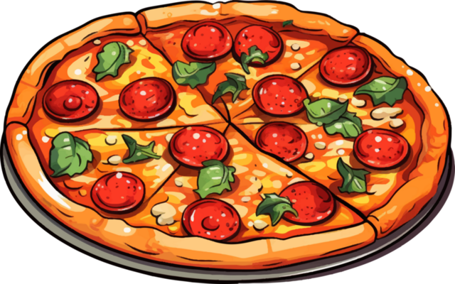
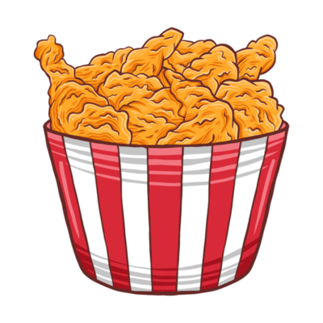

This is by far my faviorite food I absolutley love Cheeseburgers!
The Primary reason I love Chesseburgers is how creative you can be with them.
Not only do I love the taste of Chesseburgers I love you can truly make it the way YOU want!
Ultimatley how creative you can be with it as well as its Fantastic taste sements this as my Faviorite food of all Time!
Pizza! Everyone loves It and I sure do, so much so that its my second faviorite food!
Very rarely would I every turn down something like pizza, Its simply one of the most consistent, foods.
One of my faviorite things about Pizza Is again how creative you can be when making one!
Ultimatley, You can never go wrong with a Cheesy, Delectable Pie, There is a clear reason why Its one of the Most popular foods in the world!
Finally, Fried Chicken, although I do not like it as much as the other two I still thouroughlly enjoy it.
As of right now I do not yet know how to make a proper meal and one of the first ones I want to make is Fried Chicken.
One of my faviorite things about Fried Chicken is actually the sauce you can eat with it elevating the already Worderful Flavor.
Ultimatley, Fried Chicken is certainly my third faviorite food because of simply how great it taste along with the sides you can have along with it